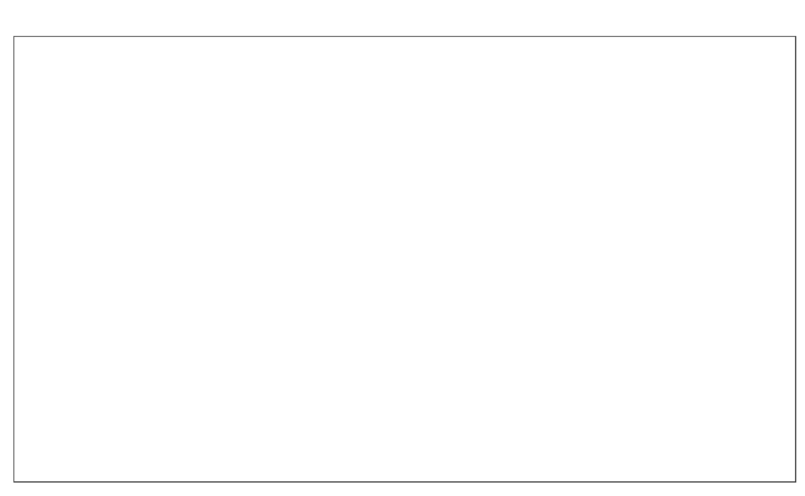

Kapitel 6 Komplex
6.1 Diagonalspiel
6.2 Kreisel
6.2.1 Vierer Kreisel
Vier Spieler verteilen sich wie folgt aufs Feld: Ein Zuspieler auf Position 3, Jeweils ein Angriff/Abwehrspieler auf Position 2 und 4 Ein Abwehrspieler auf Position 6. Der Zuspieler Spielt immer abwechselnd auf Position 2 oder 4. Der Von dieser Position wird diagonal Angegriffen. der nicht abwehrende Spieler zieht sich auf zurück (ca. 3-Meterlinie) der Spieler von Position 6 schließt an, so dass sie sich nicht behindern. Die Abwehr erfolgt zum Zuspieler der nun den wieder zuspielt usw…
Wichtig ist darauf zu achten, dass die Spieler immer wieder auf ihre Position zurückkehren, damit vor jeder Abwehr eine Bewegung erfolgt
Varianten
- Der Zuspieler spielt nicht abwechselnd, sondern zufällig auf Position 2 oder 4.
- Angriff im Sprung
- Zuspiel im Sprung
6.2.2 Fünfer Kreisel
Wie Vierer Kreisel 6.2.1 nur stehen auf Position 6 zwei Spieler, die verschieben. Auf die Abstimmung zwischen den Spielern achten
6.2.3 Sechser Kreisel
6.2.4 Achter Kreisel
Wie Sechser Kreisel 6.2.3, mit der Ausnahme, dass es einen oder 2 dedizierte Zuspieler gibt, der von außerhalb des Feldes einläuft.
6.3 Diagonal Angriff mit nachlaufen
6.4 Longline Pritschen, diagonal Baggern mit Nachlaufen
Alle vier Ecken eines Feldes werden besetzt in den Ecken am Netz stehen jeweils 2 Spieler hintereinander. Die vorderen Spieler am Netz haben jeweils einen Ball und beginnen damit den Ball longline zu spielen und dem eigenen Ball nach zu laufen. Die Spieler in der hinteren Ecke baggern den Ball diagonal zum jeweils verbliebenen Spieler am Netz und folgen ihrem Ball. Der Spieler am Netz spielt nun wieder longline und folgt seinem Ball.
